Movimiento Vertical: Trayectorias de Gotas, Balas, Corchos y Burbujas en Fluidos
Esta hoja de trabajo muestra la evolución de un gota, una bala y una burbuja lanzadas (o dejadas caer) verticalmente en presencia del resitencia del aire
o un fluido cualquiera.. El movimiento se describe mediante la ecuación diferencial y se modela el efecto de la resitencia del aire.
Para el modelaje tomamos:
-
 0 la densidad del fluido y 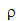1 la densidad del cuerpo (gotas/balas/conchos/burbujas) en Kilogramos/
0 la densidad del fluido y 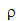1 la densidad del cuerpo (gotas/balas/conchos/burbujas) en Kilogramos/
- K es el coeficiente de fricción que depende de la forma de cuerpo. En el caso de una esfera en un fluido K=6
 R y
R y
- 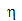 es el coeficiente de fricción que depende de la viscosidad del fluido. En el sistema MKS se expresa en N sg /
 y se mide en Poise que es igual a un décimo de la unidad en MKS.
y se mide en Poise que es igual a un décimo de la unidad en MKS.
- g es la aceleración de gravedad, la cual consideramos constante igual a 9.8 metros por segundo cuadrado
- y(t) es la altura del movil (gotas, balas, corchos o burbujas) en un tiempo t.
La evolución en el tiempo viene gobernada por una ecuación diferencial de segundo orden.
| > | restart; |
| > | m0:=(4*Pi/3)*rho0*R^3;
m:=(4*Pi/3)*rho1*R^3; rho0:=xi*rho; rho1:=phi*rho; |
| 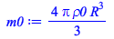 | |
| 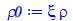 | |
| (1.1) |
Donde  y
y  representan las densidades relativas del fluido y del cuerpo respecto al agua (de densidad
representan las densidades relativas del fluido y del cuerpo respecto al agua (de densidad  ), respectivamente.
), respectivamente.
Para el caso de una gota de lluvia cayendo, una pelota lanzada hacia arriba o una burbuja (o un corcho) que se despega desde el fondo
de un vaso de refresco, la ecuación diferencial que describe el moviento puede ser escrita como
| > | emov := m*diff(y(t),t$2) = m*g - K*eta*diff(y(t),t)-m0*g ;
K:=6*Pi*R; |
 |
|
| (1.2) |
Tenemos tres fuerzas presentes: el peso, la resistencia del aire y la fuerza de Arquímides (empuje o flotación).
La solución general será:
| > | soluciongeneral := dsolve( emov, y(t) ); |
| 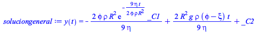 | (1.3) |
Donde _C1 y _C2 son constantes a ser determinadas por las condiciones iniciales. Es de hacer notar que, primeramente, una misma ecuación diferencial describe una variedad de fenómenos físicos. Igualmente, es importante señalar que la ecuación queda parametrizada  ,
, ,
, y 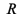. Estas cantidades nos permiten modelar el fenómeno.
y 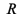. Estas cantidades nos permiten modelar el fenómeno.
Para el caso de la gota de agua supondremos que parte del reposo, por lo tanto la solución general será:
| > | solucionparticular := dsolve( {emov,y(0)=0,D(y)(0)=v0}, y(t) ); |
| (1.4) |
La posición y la velocidad vendrán dadas por
| > | posicion:=rhs(solucionparticular); |
| 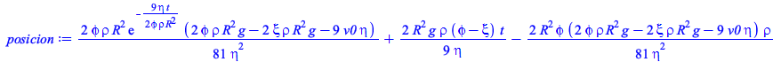 | (1.5) |
| > | velocidad:=diff(posicion,t); |
| 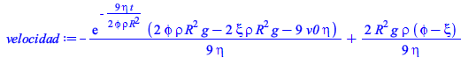 | (1.6) |
El cambio de signo en las fuerzas indica que en algún momento la fuerza de fricción y el empuje anularán al peso. En ese caso estaremos
hablando una velocidad límite. Es decir de una velocidad a partir de la cual el movil cae sin aceleración.
| > | ecuac1:=0=rhs(emov):
vellimite:= simplify((4/3*Pi*(rho1-rho0)*R^3*g)/(6*Pi*R*eta)); |
| 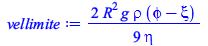 | (1.7) |
La velocidad límite será constante. En el caso de una gota de lluvia la densidad del aire respecto al agua es 1,30 10(-3), y consideremos el diámetro de la gota de agua 1mm= 10(-3)m.
| > | gota:= [g = 9.8, R=0.001,rho=10^3, xi=1.3*10^(-3), phi=1, v0=0,eta=0.01894*10^(-3)]:
vellim:=subs(gota,vellimite); |
| (1.8) |
La gota tiene una velocidad límite de 120 mts/sg o
| > | vellimiteKmh:=vellim*(0.001 / ( (1/60)*(1/60) )); |
| (1.9) |
° casi 500 Kmh !
| > | vel1:=subs(gota,velocidad);
plot(vel1,t=0..100,labels=[t,v]); |
| 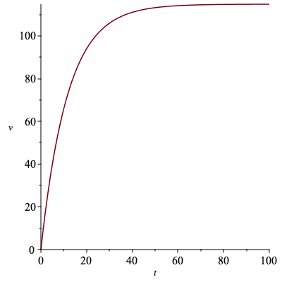 |
| > | pos1:=subs(gota,posicion);
plot(pos1,t=0..100,labels=[t,y]); |
| 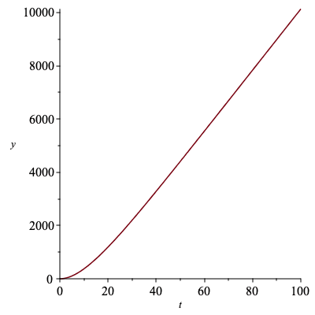 |
Si la gota crece a 0,2, 0,3, 0,4, 0,5 mm tendremos
| > | gota2:= [g = 9.8, R=0.002,rho=10^3, xi=1.3*10^(-3), phi=1,v0=0,eta=1.81*10^(-5)]:
gota3:= [g = 9.8, R=0.003,rho=10^3, xi=1.3*10^(-3),phi=1, v0=0,eta=1.81*10^(-5)]: gota4:= [g = 9.8, R=0.004,rho=10^3,phi=1, xi=1.3*10^(-3), v0=0,eta=1.81*10^(-5)]: gota5:= [g = 9.8, R=0.005,rho=10^3, xi=1.3*10^(-3), phi=1,v0=0,eta=1.81*10^(-5)]: |
| > | vel2:=subs(gota2,velocidad):
vel3:=subs(gota3,velocidad): vel4:=subs(gota4,velocidad): vel5:=subs(gota5,velocidad): plot([vel1,vel2,vel3,vel4,vel5],t=0..300,labels=[t,v],color=[red,green,blue,yellow,black]); |
 |
| > | pos2:=subs(gota2,posicion):
pos3:=subs(gota3,posicion): pos4:=subs(gota4,posicion): pos5:=subs(gota5,posicion): plot([pos1,pos2,pos3,pos4,pos5],t=0..300,labels=[t,y],color=[red,green,blue,yellow,black]); |
| 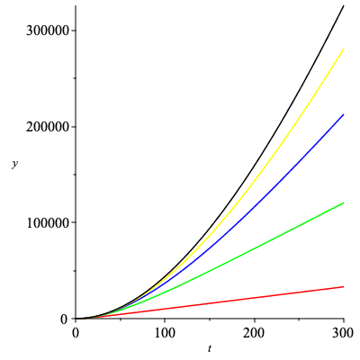 |
Consideremos el caso de una bala disparada verticalmente hacia arriba. Una bala la podemos aproximar por una esfera de 10 mm con 15 gr de masa y
se dispara con una velocidad de 600 m/sg. La densidad del hierro relativa al agua es 7,86
| > | velocidadsr:=v0-g*t;
posicionsr:=v0*t-g*t^2/2; |
| (1.10) |
| > | balasr:=[g=9.8,v0=600]:
velsr:=subs(balasr,velocidadsr); possr:=subs(balasr,posicionsr); |
| 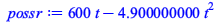 | (1.11) |
| > | bala:= [g = -9.8, R=0.01,rho=10^3, xi=1.3*10^(-3), phi=7.86, v0=600,eta=1.81*10^(-5)]:
vel1:=subs(bala,velocidad); plot([vel1,velsr],t=0..125,labels=[t,v]); |
 |
| > | pos1:=subs(bala,posicion); plot([pos1,possr],t=0..125,labels=[t,y]); |
 |
Si aumentamos la viscosidad del liquido a agua, aceite y glicerina
| > | bala2:= [g = -9.8, R=0.01,rho=10^3, xi=1.3*10^(-3), phi=7.86, v0=600,eta=1.002*10^(-3)]:
bala3:= [g = -9.8, R=0.01,rho=10^3, xi=1.3*10^(-3), phi=7.86, v0=600,eta=130*10^(-3)]: bala4:= [g = -9.8, R=0.01,rho=10^3, xi=1.3*10^(-3), phi=7.86, v0=600,eta=629*10^(-3)]: |
| > | vel2:=subs(bala2,velocidad):
vel3:=subs(bala3,velocidad): vel4:=subs(bala4,velocidad): plot([vel1,vel2,vel3,vel4],t=0..60,labels=[t,v],color=[red,green,blue,yellow]); |
 |
| > | pos2:=subs(bala2,posicion):
pos3:=subs(bala3,posicion): pos4:=subs(bala4,posicion): plot([pos1,pos2,pos3,pos4],t=0..60,labels=[t,y],color=[red,green,blue,yellow]); |
 |
recortanto la escala de tiempo a t= 6sg
| > | plot([vel1,vel2,vel3,vel4],t=0..6,labels=[t,v],color=[red,green,blue,yellow]);
|
 |
| > | plot([pos1,pos2,pos3,pos4],t=0..6,labels=[t,y],color=[red,green,blue,yellow]); |
 |
y a t=0.6sg
| > | plot([vel1,vel2,vel3,vel4],t=0..0.6,labels=[t,v],color=[red,green,blue,yellow]); |
 |
| > | plot([pos1,pos2,pos3,pos4],t=0..0.6,labels=[t,y],color=[red,green,blue,yellow]); |
| 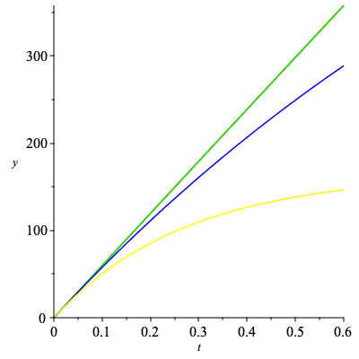 |
y a t=0.06sg
| > | plot([vel1,vel2,vel3,vel4],t=0..0.06,labels=[t,v],color=[red,green,blue,yellow]); |
 |
| > | plot([pos1,pos2,pos3,pos4],t=0..0.06,labels=[t,y],color=[red,green,blue,yellow]); |
 |
Consideremos ahora un corcho esferico que parte del reposo en el fondo de recipiente con agua, también tendrá una velocidad
límite dada por
| > | corcho:= [g = -9.8, R=0.02,rho=10^3, xi=1, phi=0.8, v0=0,eta=1.002*10^(-3)]:
vellim:=subs(corcho,vellimite); |
| (1.12) |
y podremos graficar su velocidad y su aceleración
| > | vel1:=subs(corcho,velocidad);
plot(vel1,t=0..300,labels=[t,v]); |
| 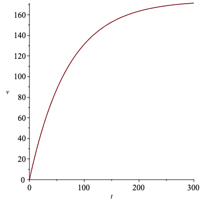 |
| > | pos1:=subs(corcho,posicion);
plot(pos1,t=0..300,labels=[t,y]); |
| 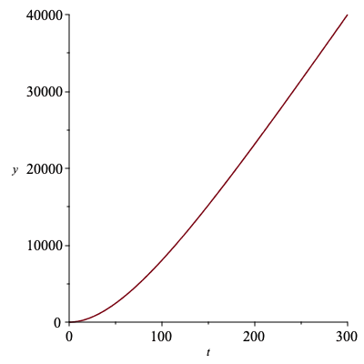 |
Al cambiar la viscosidad a aceite y reducir el tiempo
| > | corcho2:= [g = -9.8, R=0.02,rho=10^3, xi=1, phi=0.8, v0=0,eta=130*10^(-3)]:
corcho3:= [g = -9.8, R=0.02,rho=10^3, xi=1, phi=0.8, v0=0,eta=629*10^(-3)]: |
| > | vel2:=subs(corcho2,velocidad):
vel3:=subs(corcho3,velocidad): plot([vel1,vel2,vel3],t=0..20,labels=[t,v],color=[red,green,blue]); |
 |
| > | pos2:=subs(corcho2,posicion):
pos3:=subs(corcho3,posicion): plot([pos1,pos2,pos3],t=0..20,labels=[t,y],color=[red,green,blue]); |
 |
| > |
| > | P*V = N*R*T;P[0]*V[0];P[0]; V[0]; P = rho*g*y(t);
rho*g*y(t)*(4/3)*Pi*R(t)^3 = rho * g * y(0) * (4/3) * Pi * R(0)^3; |
| 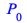 | |
| 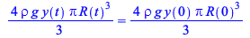 | (1.13) |
Finalmente supongamos una burbuja. Por lo tanto, el radio de la burbuja varia con la presión. Si suponemos que la burbuja está compuesta por un gas ideal tendremos que 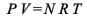 = 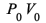 = constante, donde  y
y  son la presión y el volumen inicial respectivamente.
son la presión y el volumen inicial respectivamente.
Ahora bien, si la presión en un líquido viene dada por  , con y(t) la profundidad, tendremos que
, con y(t) la profundidad, tendremos que
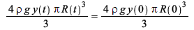 =  = constante
= constante
con lo cual
| > | restart:R:=gamma0*y(t)^(-1/3); |
| 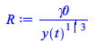 | (1.14) |
donde gamma =R(0) * ( y(0))^(1/3)
nótese que la masa de la burbuja es constante, no así la masa desplazada por ella. Adicionalmente que hemos
cambiado el origen de coordenadas y ahora la posición inicial, y(0) = y0 es distinta de cero.
| > | gamma0 := R0*y0^(1/3);
m0:=(4*Pi/3)*rho0*R^3; mB:=(4*Pi/3)*rho1*R0^3; rho0:=xi*rho; rho1:=phi*rho; K:=6*Pi*R; |
| 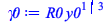 | |
| 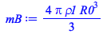 | |
| 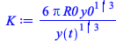 | (1.15) |
Donde  y
y  representan las densidad relativas del fluido y del cuerpo respecto al agua (de densidad
representan las densidad relativas del fluido y del cuerpo respecto al agua (de densidad  ), respectivamente. Por su parte
), respectivamente. Por su parte
R0 representa el radio inicial de la burbuja.
Para el caso una burbuja que se despega desde el fondo de un vaso de refresco la ecuación diferencial que describe el moviento
puede ser escrita como
| > | emov2 := mB*diff(y(t),t$2) = -mB*g - K*eta*diff(y(t),t)+m0*g ; |
| 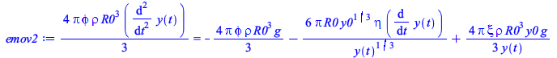 | (1.16) |
| > | dsolve({emov2,y(0)=-y0,D(y)(0)=0},y(t)); |
Por lo tanto debemos resolverla numéricamente. Para ello es imperioso adimensionalizarla. La integración numérica se hace
sobre números, por lo que las variables deben ser adimensionales. Para ello cambiamos la variable independiente (el tiempo, t)
y la variable dependiente (la profundidad, y(t)) por
tt = t/tfinal y yy(tt) = y(t)/y(0)
| > | emov2AD := mB*diff(yy(tt),tt$2)(y0/(tfinal^2)) = -mB*g -6*Pi*R0/yy(tt)^(1/3)*eta*diff(yy(tt),tt)*(y0/tfinal)+4/3*Pi*xi*rho*R0^3/yy(tt)*g; |
| 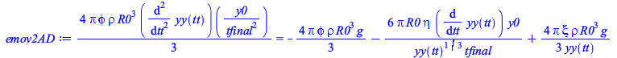 | (1.17) |
acomodando un poco queda como
| > | emov2AD1:=diff(yy(tt),tt$2)=-(g/(y0/tfinal^2))
-(6*Pi*R0/yy(tt)^(1/3)*eta*diff(yy(tt),tt)*y0/tfinal)/(4/3*Pi*phi*rho*R0^3*(y0/tfinal^2)) +(4/3*Pi*xi*rho*R0^3/yy(tt)*g)/(4/3*Pi*phi*rho*R0^3*(y0/tfinal^2)); |
 |
(1.18) |
y ahora convertimos esta ecuación de segundo orden en, dos ecuaciones de primer orden mediante un cambio de
variable
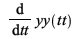 = pp(tt) con lo cual  = 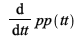
= 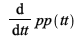
y entonces el sistema queda como
| > | ecuac1a:=diff(yy(tt),tt)=pp(tt);
ecuac1b:=diff(pp(tt),tt) = -g/y0*tfinal^2 -9/2*1/R0^2/yy(tt)^(1/3)*eta*pp(tt)*tfinal/phi/rho +xi/yy(tt)*g/phi/y0*tfinal^2; |
| 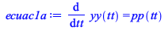 | |
| 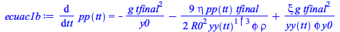 | (1.19) |
para una burbuja e agua esto es: 
| > | burbuja110:= [g = -9.8, R0=0.002,rho=10^3, xi=1, phi=0.08, eta=1.002*10^(-3),y0 =-10, tfinal=50]:
ecuac1a1:=subs(burbuja110,ecuac1a); ecuac1b1:=subs(burbuja110,ecuac1b); sist1:=ecuac1a1,ecuac1b1: |
| (1.20) |
| > | with(plots):Digits:=20:
sol:=dsolve({sist1,pp(0)=0,yy(0)=1},{pp(tt),yy(tt)},numeric,stiff=true,range=0..1); odeplot(sol,[tt,yy(tt)],0..1,numpoints=500,title="posicion vs tiempo"); |
| 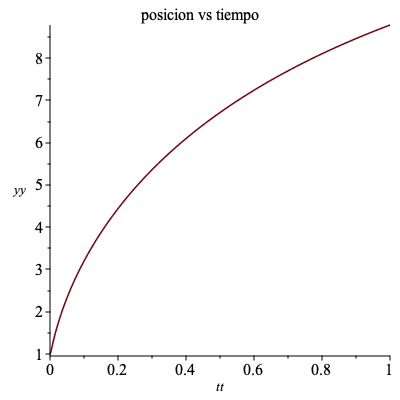 |
y lha gráfica de la velocidad será
| > | odeplot(sol,[tt,pp(tt)],0..1,numpoints=500,title="velocidad vs tiempo"); |
| 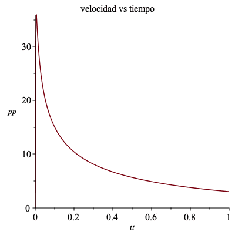 |
Equivalentemente, MAPLE puede resolver la ecuación de segundo orden directamente.
| > | emov2AD10:= subs(burbuja110,emov2AD1);
sol2:=dsolve({emov2AD10,yy(0)=1,D(yy)(0)=0},numeric,stiff=true); odeplot(sol2,[tt,yy(tt)],0..1,numpoints=50); |
 |
|
| 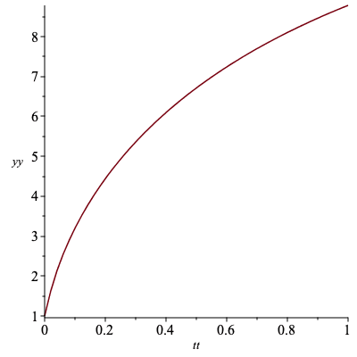 |
| > |